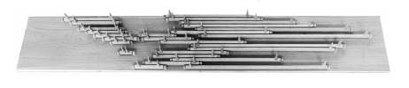
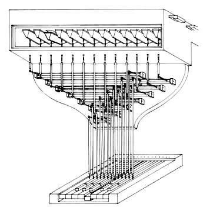
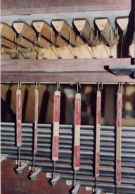

{kind=link}

Hrací traktura, nazıvaná rovnì�
tónová nebo manuálová èi pedálová je systém (soustava)
prvkù, pøevádìjících pohyb klávesy stisknuté varhaníkem na pohyb ventilù
vpouštìjících stlaèenı vzduch do píš�al, umístìnıch na vzdušnici. Mechanická
verze traktury je sestavena z jednotlivıch mechanickıch
elementù, které nejsou zpravidla pou�ity samostatnì, ale v montá�ních
skupinách. Vyplıvá to jednoznaèného spojení ka�dé konkrétní klávesy s
odpovídajícím ventilem (ventily) ve vzdušnici. Na ilustraèním obrázku, pøedstavujícím øez varhanami s mechanickou trakturou je zvıraznìna tónová traktura èervenì (popis jednotlivıch souèástí je uveden na úvodní stránce "Mechanická traktura"). |
Podívejme se teï blí�e na nejèastìji pou�ívané elementy
mechanické traktury. Na fotografii je zachycena skupina úhelníkù spoleènì
s pøipojenımi konci abstraktù, které pohyb rozvádìjí dále ve svislém i
vodorovném smìru: |
Podobnì je tomu v pøípadì pøevodovıch tyèí - høídelù,
které jsou ve varhanách zpravidla namontovány na spoleèné desce, která
se nazıvá høídelnice (høídelová deska, váleèník). Jejím úkolem je rozvést
pohyb do stran (varhany jsou v�dy širší, ne� je šíøka klávesnice, høídelnice
umo�òuje pøíènı rozvod pohybu a díky své dùmyslné konstrukci zabírá v
nástroji minimum místa). Høídelová deska mù�e bıt ve varhanách umístìna
svisle i vodorovnì podle potøeby a nemusí bıt jen jedna. Høídele na høídelnici
jsou zpravidla rùznıch délek (podle potøeby pøevedení pohybu) a umístìné
tak, aby si jejich raménka navzájem nepøeká�ely v pohybu. Pou�ití høídelù
ukazují následující obrázky. |


Jeden z nejèastìji pou�ívanıch zpùsobù vyu�ití høídelù ve varhanách.
|
 |
Všimnìme si nyní (dobøe
je to patrné na pøedchozím obrázku), �e klávesy a jim odpovídající ventily
jsou rozmístìny ve dvou rovnobì�nıch øadách. Pøesto nelze jednoduše pøímo
spojit jednotlivé elementy tak, aby ka�dá klávesa pohybovala jí pøíslušnım
ventilem. Vzdálenosti mezi jednotlivımi klávesami toti� neodpovídají vzdálenostem
mezi ventily ve vzdušnici (místo, potøebné pro píš�aly je vìtší ne� šíøka
klávesy), nepodaøilo by se proto spojit všechny elementy jen pomocí samotnıch
abstraktù. Potøebujeme tedy další prvek, jeho� prostøednictvím pøevedeme
pohyb v pøíèném smìru. A tím mù�e bıt právì høídel. |
Ve vìtšinì varhan s mechanickou trakturou je tento
systém podstatnì propracovanìjší a sestává z mnoha dalších mechanickıch
prvkù - úhelníkù, abstraktù, pøezmenù, bodcù atd. Jen funkce høídelù jako
prvku pro pøíènı rozvod pohybu je v�dy stejná. Høídel je mechanismem,
kterı pøekonává nestejné vzdálenosti mezi ostatními elementy traktury
a umo�òuje mimo jiné rovnobì�né vedení všech abstraktù ovládajících ventily. V malıch varhanách je mo�né se setkat s mechanismem, kterı je kombinací tradièního høídelového mechanismu s úhelníky. Jedná se o dvouramennou páku s rameny upevnìnımi na høídeli pod pravım úhlem. Na následující animaci práce mechanické traktury je pøíklad právì takového uspoøádání: |
Samozøejmì místo takovéhoto kombinovaného uspoøádání je mo�né pou�ít tradièní høídel s rovnobì�nımi raménky a pohyb dovést abstraktem k úhelníku, kterı zmìní jeho smìr pod pravım úhlem. Kombinovanı mechanismus ale umo�òuje konstrukci zjednodušit a pou�ít jeden slo�itìjší element k rozvedení pohybu zároveò se zmìnou jeho smìru pøi souèasné úspoøe místa, co� má velkı vıznam pøedevším u menších nástrojù. Na následujících obrázcích a animacích jsou vyobrazeny rùzné varianty provedení mechanické traktury ve spojení se základními typy vzdušnic (tónovıch ventilù ve vzdušnicích). Jedná se o schématické náèrty, ne o vıkresy konkrétního konstrukèního provedení, které slou�í k objasnìní principu funkce jednotlivıch elementù traktury. Z tohoto dùvodu jsou nepodstatné èásti mechanismù vynechány nebo maximálnì zjednodušeny, aby zbyteènì nekomplikovaly zobrazení a nenarušovaly jeho názornost. |
Mechanická traktura více èi ménì slo�ité konstrukce mù�e spolupracovat napø. se zásuvkovou vzdušnicí. Nìkteré prameny ji oznaèují jako tónovou vzdušnici - ka�dı tón má jen jeden ventil. Traktura tak pøímo spojuje ventil s pøíslušnou klávesou. Velmi jednoduchá je pak i regulace traktury, pøedevším ve srovnání tého� uspoøádání u ku�elkové vzdušnice (ku�elková vzdušnice bıvá oznaèována jako rejstøíková - tón má ventil v ka�dém rejstøíku). |
|
V pøedchozím pøíkladì nebylo pou�ito høídele, v praxi bychom ale nástroj bez høídelnice stì�í hledali. Na tomto obrázku je tedy mechanismus traktury doplnìn právì o takovou høídel. Ve skuteènıch varhanách bude mechanismus traktury mnohem komplikovanìjší a bude vyu�ívat mnoho dalších elementù. |
Následující animace ukazují spojení mechanické traktury
s ku�elkovou vzdušnicí. Jak u prvního provedení s úhelníky, tak i u druhého
s otoènou høídelkou s raménky zpùsobuje stisk jedné klávesy souèasné otevøení
nìkolika (u velkıch varhan i nìkolika desítek) ventilù. Je proto nutné
všechny ventily mechanicky vyregulovat tak, aby stisk klávesy zpùsobil
opravdu souèasné nadzdvi�ení odpovídajících ku�elek. Pouze velmi pøesné
seøízení umo�òuje synchronizaci nasazení zvuku všech hlasù pøíslušného
tónu na vzdušnici: |
Problém regulace je obdobnı i u bodcové vzdušnice,
která je obmìnou rejstøíkové vzdušnice s ku�elkovımi ventily. Ventily
jsou obdélníkové (jako u zásuvkovıch vzdušnic), umístìné svisle a otevírané
pomocí prùchozí tyèky (bodce, jehly). Na schématu naznaèenı úhelník mù�e
bıt v praxi zastoupen høídelí s raménky upevnìnımi pod pravım úhlem. |
Na souvisejících stránkách jsou popsány nejèastìji
pou�ívané komponenty mechanické
traktury, rejstøíková
traktura a traktura spojek. |
Poznámka: Tato stránka je souèástí Anatomie varhan ®, © Ing. Petr Bernat. Všechny animace © Konrad Zacharski